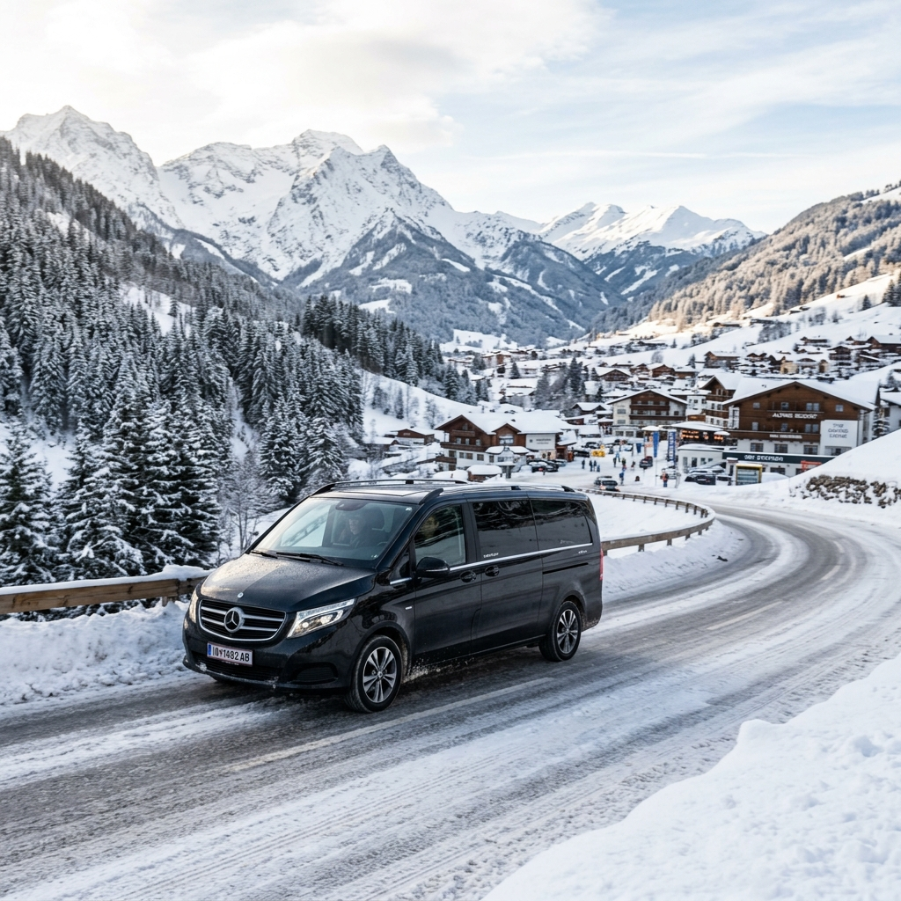

DİĞER HİZMETLERİMİZ
İhtiyacınıza özel VIP ulaşım çözümleri.

Kayak sezonunda Ankara'dan pistlere ulaşmak, yolculuğun en yorucu kısmı olabilir. VipTrip ile Kartalkaya, Ilgaz ve Erciyes kayak merkezlerine evinizin ya da otelinizin kapısından alınır, doğrudan otel girişine bırakılırsınız. Kayak takımlarınız, botlarınız ve bavullarınız için araçta yer ayrılır; direksiyonda ise kış yollarını bilen profesyonel şoförümüz olur.
Aşağıdaki süreler Kızılay çıkışlı, normal yol koşulları için yaklaşık değerlerdir. Kar yağışı ve hafta sonu yoğunluğunda yolculuk uzayabilir.
Kartalkaya yolculuğu hakkında daha fazla bilgi için Ankara Kartalkaya VIP transfer rehberimize, Erciyes için Ankara Erciyes yazımıza göz atabilirsiniz.
Arkadaş grupları, aileler, kayak kulüpleri ve şirket gezileri için Sprinter VIP ile 13 kişiye kadar tek araçta seyahat edebilirsiniz. Kişi başı maliyet, ayrı ayrı yol masrafından çoğu zaman daha uygundur.
Aile ve küçük gruplar
Kulüp ve şirket grupları
Rezervasyon sırasında kayak ya da snowboard sayısını belirtmeniz yeterli; ekipman ve bagaj yerleşimini buna göre planlıyoruz.
Tarihinizi, kişi sayınızı, ekipman adedini ve hangi merkeze gideceğinizi yazın; size net fiyatla dönelim.
Normal yol koşullarında Kızılay'dan Kartalkaya'ya yaklaşık 2,5–3 saat sürer. Kar yağışı ve hafta sonu yoğunluğunda süre uzayabilir.
Evet. Rezervasyonda kayak/snowboard ve bavul sayısını belirtmeniz yeterli. Büyük gruplar için 15 bavul kapasiteli Sprinter VIP öneriyoruz.
Evet. Cuma çıkış, pazar dönüş şeklinde gidiş ve dönüşü tek rezervasyonda planlıyoruz. Fiyat için WhatsApp'tan tarih ve kişi sayısını yazmanız yeterli.
Yola çıkmadan önce yol durumunu kontrol ediyoruz. Yolculuk güvenli değilse çıkış saatini sizinle birlikte yeniden planlıyoruz.
Evet, tüm transferlerimiz faturalıdır. Şirket ve kulüp gezileri için kurumsal fatura kesilir.
İhtiyacınıza özel VIP ulaşım çözümleri.